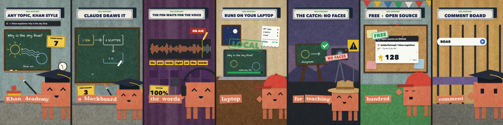

Một Claude Code skill làm reel dọc 9:16 kiểu giấy cắt. Toàn bộ hình được vẽ bằng code trên canvas. Giọng đọc là đồng hồ: mỗi câu là một cảnh, prop xuất hiện đúng lúc từ tương ứng được đọc. Mọi thứ chạy local: Kokoro, whisper.cpp, Playwright và ffmpeg.

Skill gồm hai nửa. SKILL.md là hướng dẫn để Claude biết khi nào dùng skill, viết gì và theo luật nào. bin/reel là CLI chạy pipeline. Claude không tự sinh video: nó viết script.json và scenes.js, rồi gọi $REEL ….
animate (MIT)kit/* và phần lớn tools/*. Engine dùng chung: RNG, easing, renderer, synth, exporter. Xem NOTICE.md.styles/paper-reel/kit.js, kokoro_lines.py, align.mjs, bin/reel, templates/starter, examples/khan-skill.SKILL.md và skills/paper-reel/SKILL.md giống hệt nhau. Sửa một bản thì phải sửa cả bản kia.Bấm vào từng bước để xem ai làm, lệnh gì, đọc và ghi file nào.
Bên trái là video thật (docs/demo.mp4, xuất từ examples/khan-skill). Ở giữa là bản mô phỏng đơn giản, viết lại bằng JS ngay trong trang này, dùng voice.json và shot list thật của ví dụ. Bản này không phải renderer thật; nó chỉ cho thấy thời gian của từ quyết định cắt cảnh, prop, mood và caption chip như thế nào. Kéo thanh trượt hoặc bấm vào timeline để tua.
| frame | |
| shot (SHOT_LIST) | |
| E0 (scene bắt đầu) | |
| câu (VOICE.lines) | |
| từ đang đọc | |
| cue kế tiếp |
examples/khan-skill/src/scenes.js):est:true: không khớp, thời gian được chia đều
cắt cảnh: CUT(id) = line.t0 − 0.1 hoặc split VW(..).t0 − 0.08
prop gắn vào một từ
src/head.html)const VL = (id) => VOICE.lines.find((l) => l.id === id); // lần xuất hiện thứ n của word trong câu id → { t0, t1 } const VW = (id, word, n = 0) => { … }; // cảnh bắt đầu 0.1s trước khi câu được đọc const CUT = (id) => Math.max(0, VL(id).t0 - 0.1);
Đổi giọng hoặc tốc độ đọc thì voice.json thay đổi, và mọi cue tự dịch theo. Không có thời gian nào bị hard-code.
// examples/khan-skill/src/head.html [CUT('draw'), 'describe'], [VW('draw', 'claude').t0 - 0.08, 'board'], // starter dùng cách khác, gọn hơn: SPLITS.push(['draw', 'claude', 0, 'board']);
Câu draw có 2 shot. Câu free cũng vậy (keys → laptop trên từ "it"). Tổng cộng 7 câu, 9 shot.
index.htmlKhông có bundler hay import. Các file được nối chuỗi theo thứ tự cố định thành một khối <script>, nên mọi tên top-level dùng chung một scope. Bấm vào từng khối để xem chi tiết.
const STYLE = {…}; (2) code không được chứa http(s):// hay data:, ảnh của bạn phải đặt trong <piece>/assets/ để build nhúng base64; (3) new vm.Script(...) phải parse được. Hai helper cùng tên ở top-level sẽ ra lỗi syntax error.kit/morph.js → renderFrame(t))Mỗi frame là một hàm thuần của t. Không có state nào giữ lại giữa các frame, nên 6 worker có thể render bất kỳ frame nào, theo bất kỳ thứ tự nào.
F = round(t·30) % NFRAMES; vì STYLE.ones = true nên TT = F/30 (chuyển động trên từng frame, không "boil").F, đặt E0 = ERA_LIST[e][0], tức thời điểm cảnh bắt đầu.BRIDGES = [] (src/bridges.js), nên đi nhánh cắt thẳng: renderEra phủ STYLE.paper lên layer rồi gọi SCENES[key]().VW) → clawd → prSign → prTerm → prChips().prChips không vẽ ngay mà đẩy vào DEFER. flush() vẽ caption sau cùng, trong toạ độ màn hình.STYLE.post(): phủ texture giấy bằng soft-light, sau đó vignette multiply.RNG(seed…), không dùng Math.random() hay Date. reel check → tile.mjs render mỗi frame 2 lần (lượt 2 đảo thứ tự) rồi so pixel.TT: thời điểm hiện tại · E0: lúc cảnh bắt đầuev(t, d): tiến độ 0→1 · popS(t): pop back-easecountUp(t0, d, a, b) · springMove(t0, a, b, SPRING.playful)morph.js có hệ thống bridge/morph của animate (cảnh co lại thành một hình rồi nở ra). paper-reel tắt nó. Muốn chuyển cảnh mềm, thêm vào BRIDGES và cài STYLE.window/blob/hero.Nhạc và SFX được tổng hợp bằng WebAudio OfflineAudioContext ngay trong trang. Không có file nhạc nào. Giọng đọc được trộn vào sau, bằng ffmpeg.
async function buildScore(), các synth pad / bass / pluck / sub / noiseHit / sweep / chime / blip, duck −3 dB và cắt 2.5 kHz khi có narration'm': lo-fi 100 BPM D–Bm–G–A's': whoosh vào mỗi cut + SFX_CUES(): type / tick / pop / thud / chimerenderAudioWav(), renderAudioStems()piece.json voice.music (−13 dB), sidechaincompress theo voice, amix, loudnorm I=−14f%04d.png + audio.wav → libx264 CRF 14, AAC 192k → renders/final.mp4score-head.js mở hàm, score-tail.js đóng hàm. Vì vậy src/score.js chỉ là phần thân, không có khai báo function. Muốn dùng nhạc riêng: thêm "music": { "file": "audio/track.wav", "start": 0, "gain": 0 } vào piece.json; SFX vẫn được trộn lên trên.| Bạn muốn | Sửa file | Ghi chú |
|---|---|---|
| Đổi kịch bản, giọng, tốc độ | <piece>/voice/script.json | Mỗi câu có thể có voice, speed, say (đọc khác chữ hiển thị). Chạy lại một câu: --only id. |
| Đổi cảnh của một video | <piece>/src/scenes.js | SCENES.<id>, SPLITS, SFX_CUES() |
| Đổi nhạc nền | <piece>/src/score.js hoặc piece.json "music" | BPM, hợp âm prog, âm lượng voice.music |
| Thêm prop, mũ, mood mascot | styles/paper-reel/kit.js | clawdHat(), các hàm prXxx. Cập nhật Kit API ở cả hai SKILL.md. |
| Đổi caption chip | CHIP_MAX, CHIP_Y, CHIP_X, CHIP_MAXX | Khai báo bằng var nên gán lại được ở đầu scenes.js. |
| Tạo phong cách mới | <project>/styles/<ten>/kit.js + piece.json "style" | Build tìm style cạnh piece hoặc ở thư mục cha trước, sau đó mới tới skill. Bắt buộc có const STYLE. |
| Đổi kích thước, fps | src/head.html (FPS, W, H, canvas) + piece.json format | Lưới bố cục trong style kit đang hard-code cho 1080×1920. |
| Đổi cách Claude làm (cấu trúc câu, CTA, caption) | SKILL.md mục 1 và 5, description | description quyết định khi nào skill được kích hoạt. |
| Thêm lệnh CLI | bin/reel (khối case) | Thêm usage vào dòng 2–10; lệnh help in ra các dòng đó. |
| Starter mặc định | templates/starter/ | Được copy khi chạy reel new. |
// 1. voice/script.json: thêm câu { "id": "speed", "text": "It renders a reel in thirty seconds.", "after": 0.12 } // 2. src/scenes.js: đúng thứ tự câu SCENES.speed = () => { const ws = VW('speed', 'thirty').t0; prWall(PR.teal, { streak: 400 }); prFloor(1560, PR.floor); prClock(940, 470, 78, 3, 40 + TT * 8, 'clkS'); prCounter('SECONDS', countUp(ws, 0.8, 0, 30), 540, 800, { s: popS(E0 + 0.1) }); prStamp('FAST', 540, 1100, PR.red, ws + 0.3, { rot: -0.1 }); clawd(CLAWD_X, CLAWD_Y, { hat: 'cap', mood: TT > ws ? 'wow' : 'neutral' }); prSign('THIRTY SECOND RENDERS'); prChips(); // luôn gọi cuối cùng }; // 3. chạy lại $REEL voice piece --only speed # chỉ tạo lại take này, voice.wav vẫn được ghép lại $REEL still piece 14,16 look.png && $REEL check piece
<project>/ styles/my-look/kit.js ← copy từ styles/paper-reel/kit.js pieces/reel-1/piece.json ← "style": "my-look"
Style kit phải định nghĩa các hook mà morph.js gọi:
const STYLE = { name: 'my-look', paper: '#e9e5da', // nền mỗi frame backdrop(c) {…}, window(P, key, src) {…}, blob(P, c, key) {…}, hero(x, y, r) {…}, // chỉ dùng khi có BRIDGES heroColor: '#d67555', post() {…}, // texture + vignette toàn frame ones: true, // chuyển động mỗi frame (false = mỗi 2 frame) };
styles/paper-reel: CI (.github/workflows/render.yml) chạy check và export trên examples/khan-skill, nên sửa style gốc có thể làm CI fail.SHOT_LIST từ SCENES và SPLITS trong scenes.js. khan-skill lại hard-code SHOT_LIST và TIMELINE trong head.html, và dùng các hàm sceneXxx(). Nên lấy starter làm chuẩn.piece.json không có "style", build.mjs dùng cut-paper, mà repo không có style này, nên sẽ lỗi unknown style. Luôn khai báo "style": "paper-reel".core.js và morph.js đã khai báo smooth, grain, ink, burst, push, layer, W, H, F, B… Hãy đặt tiền tố cho helper của bạn.kokoro_lines.py symlink libespeak-ng.dylib thay vì copy, vì macOS chặn bản copy. Giữ nguyên patch này.voiceVì voice/voice.wav là file đã ghép. kokoro_lines.py sẽ thoát với lỗi.align: N/M words heard; từ est:true có thời gian không chính xác, đừng cue prop vào đó.textcheck fail thì dời prop, không dời caption.voice.mjs chỉ dùng faster-whisper khi có REEL_FASTER_WHISPER=1. Mặc định chỉ ước lượng, sau đó align.mjs (whisper.cpp) ghi đè.styles/<name>/ cạnh piece hoặc ở thư mục cha. Một bản copy cũ sẽ âm thầm che bản của skill.REEL=~/.claude/skills/paper-reel/bin/reel # hoặc đường dẫn repo này cd paper-reel && npm install && npx playwright install chromium $REEL doctor $REEL new ~/reels/my-reel # --from khan-skill để copy ví dụ đầy đủ $REEL voice ~/reels/my-reel --voice am_michael --speed 1.32 $REEL voice ~/reels/my-reel --only hook,cta # chỉ tạo lại vài câu $REEL build ~/reels/my-reel # mở index.html trong trình duyệt, click để nghe score $REEL still ~/reels/my-reel 2.6,6,10,14 look.png --scale 0.4 $REEL check ~/reels/my-reel # cần "text: PASS" và "deterministic: true" WORKERS=6 $REEL export ~/reels/my-reel ~/Desktop/my-reel.mp4 # tool lẻ, không gói trong bin/reel node tools/storyboard.mjs ~/reels/my-reel # bảng storyboard từ TIMELINE.board node tools/export.mjs ~/reels/my-reel --only-audio # chỉ mix lại audio